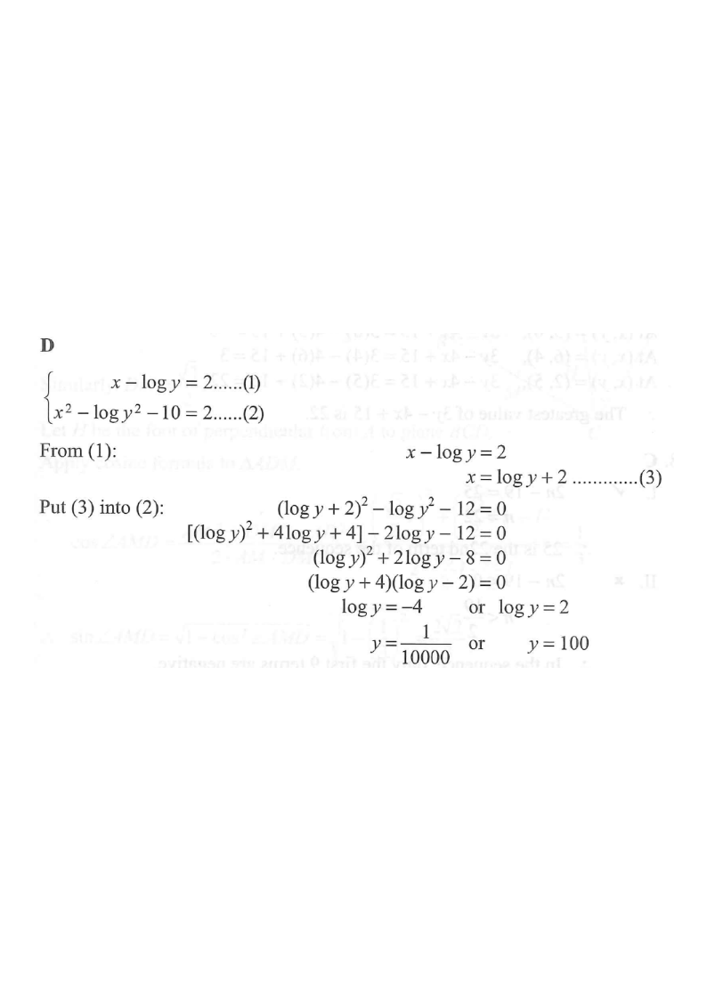

HKDSE 2013 • Paper 2 • Q34
If $x-\log y=x^{2}-\log y^{2}-10=2$, then $y=$
- A. $100$.
- B. $2$ or $-4$.
- C. $\dfrac{1}{100}$ or $10000$.
- D. $\dfrac{1}{10000}$ or $100$. ✔

STEP 1
The chain of equalities
$x-\log y=x^{2}-\log y^{2}-10=2$
actually gives two equations:
\[
\begin{cases} x-\log y=2 & \cdots(1)\\[2pt] x^{2}-\log y^{2}-10=2 & \cdots(2)\end{cases}
\]
Break a "\(=A=B\)" chain into separate equations.
STEP 2
From (1): $x=2+\log y$ … (3)
Use the log law $\log y^{2}=2\log y$ in (2): \[ x^{2}-2\log y-12=0 \]
Use the log law $\log y^{2}=2\log y$ in (2): \[ x^{2}-2\log y-12=0 \]
Make $x$ the subject first, then simplify log $y^2$.
Power Law of Logarithms
\(\log y^{k}=k\log y\)
The term \\(\log y^{2}\\) in the second equation becomes \\(2\log y\\), leaving \\(\log y\\) as the only unknown.
STEP 3
Substitute (3) into (2):
\[(2+\log y)^{2}-2\log y-12=0\]
\[4+4\log y+(\log y)^{2}-2\log y-12=0\]
\[(\log y)^{2}+2\log y-8=0\]
Now the equation is purely in $\log y$.
STEP 4
Factorise:
\[(\log y+4)(\log y-2)=0\]
\[\log y=-4 \quad\text{or}\quad \log y=2\]
Let $u=\log y$, then $u^{2}+2u-8=(u+4)(u-2)$.
Zero Product Property
\(uv=0\ \Longleftrightarrow\ u=0\ \text{or}\ v=0\)
With \\(u=\log y\\), the factorised form \\((\log y+4)(\log y-2)=0\\) splits into two simple equations.
STEP 5
Since the base is $10$:
\[ y=10^{-4}=\frac{1}{10000} \quad\text{or}\quad y=10^{2}=100 \]
$\log y=k \iff y=10^{k}$ (common log).
Definition of the Common Logarithm
\(\log y=k\ \Longleftrightarrow\ y=10^{k}\)
\\(\log\\) here is base \\(10\\), so \\(\log y=-4\\) gives \\(y=\dfrac{1}{10000}\\) and \\(\log y=2\\) gives \\(y=100\\).
ANSWER
Both values are positive, so both are valid.
ANSWER
\[ y=\frac{1}{10000}\ \text{ or }\ 100 \quad\Rightarrow\quad \boxed{\text{D}} \]
PRACTICESimilar question — try it yourself
Question. If \\(x-\log y=x^{2}-\log y^{3}-20=1\\), find \\(y\\).
Show the worked solution
Step 1. The chain gives two equations: \\(x-\log y=1\\) \u2026 (1) and \\(x^{2}-\log y^{3}-20=1\\) \u2026 (2).
Step 2. From (1), \\(x=1+\log y\\). In (2) use \\(\log y^{3}=3\log y\\) to get \\(x^{2}-3\log y-21=0\\).
Step 3. Substitute: \\((1+\log y)^{2}-3\log y-21=1+2\log y+(\log y)^{2}-3\log y-21=0\\), so \\((\log y)^{2}-\log y-20=0\\).
Step 4. Factorise with \\(u=\log y\\): \\((u-5)(u+4)=0\\), so \\(\log y=5\\) or \\(\log y=-4\\).
Step 5. Since the base is \\(10\\), \\(y=10^{5}=100000\\) or \\(y=10^{-4}=\dfrac{1}{10000}\\); both are positive, so both are valid.
Answer: \(y=100000\) or \\(y=\dfrac{1}{10000}\)